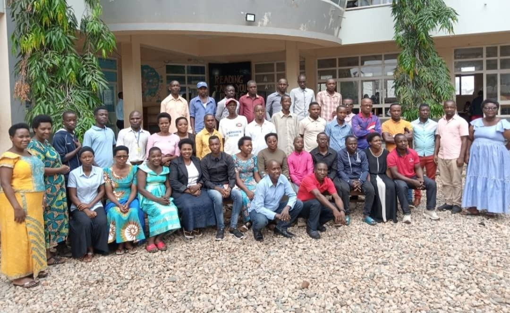
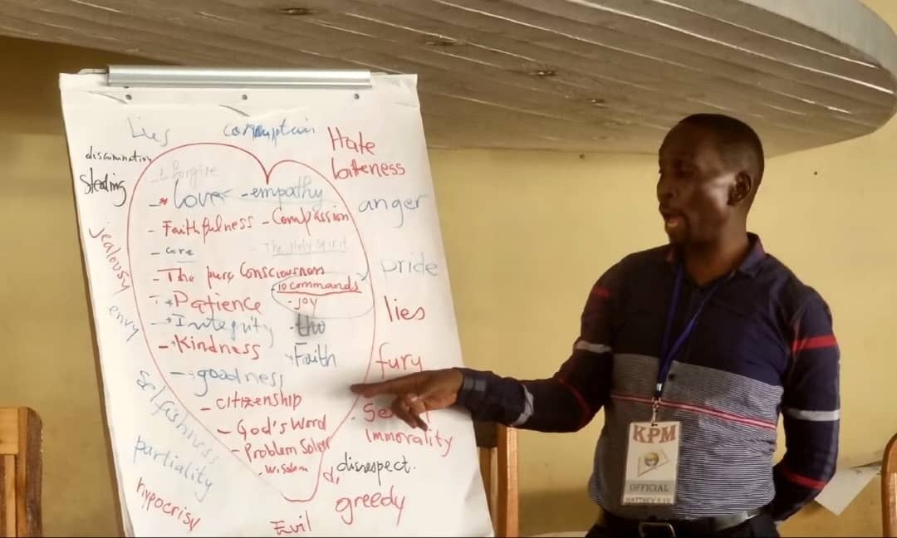

Teachers — English, IT, sciences, maths–physics
Bachelor's degree (Baccalauréat/Licence) in English, computer science, biology/chemistry/agronomy, or maths–physics and related fields.
Careers
Discovery School seeks teachers and staff with a deep faith in Christ, outstanding moral integrity, and the qualifications to give Burundian children an excellent education.

Job board
Positions are filled through an employment exam held before each school year. Anticipated needs for the coming year are listed so candidates can prepare.
To apply or ask about future positions, contact the school with your CV and a short note about your faith and experience.
Status: No open positions at the moment
The recruitment round for the 2026–2027 school year ran from April to June 2026. Positions advertised in that round give a good picture of what the school looks for:
Bachelor's degree (Baccalauréat/Licence) in English, computer science, biology/chemistry/agronomy, or maths–physics and related fields.
Degree in educational or child & adolescent psychology; special-education experience an asset.
D7, A2 or Humanités Générales qualification.
Bachelor's in IT, computer science, networking or information systems; CompTIA Network+, CCNA or Linux certification an advantage; fluent in English, French and Kirundi.
How recruitment works
Recruitment for the next school year is normally announced in the spring, on this website and on the notice boards at the school and its branches, with applications due in April–June.
The recruitment notice lists the positions, qualifications and deadline. Only applications that meet the criteria are shortlisted.
Deliver a complete application in a sealed envelope addressed to the Director, to the school reception or the Administration & HR office (working days, 7:30am–3:45pm). Documents are not returned.
Shortlisted candidates sit a written test in their subject and in English.
Candidates who pass the written test are invited to an oral test, and then to a final interview.
